VC dibujado con el mismo trazo que la ciudad isométrica. Geométrico, sin serif, sin ornamento. Hereda el lenguaje del sprite sheet.

negroUn cuadro y un círculo que lo cruza. La mitad dentro, la mitad fuera. Es literalmente la ontología de tu motor: la existencia la concede el marco, y se pierde al salir. Sin letras.

negroLa parábola de tus círculos, con el cuerpo en el vértice. Nada más. Es el gesto que el código dibuja miles de veces por minuto.

negro